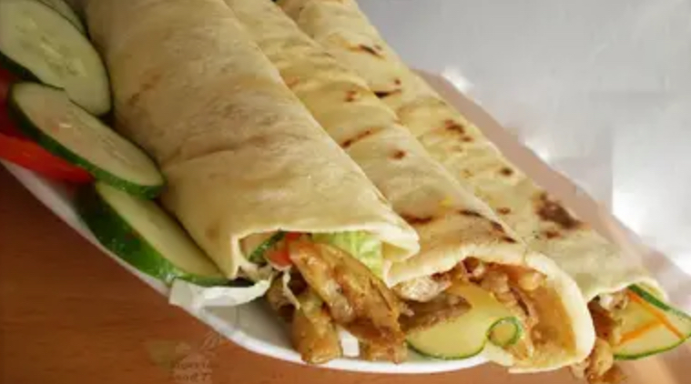
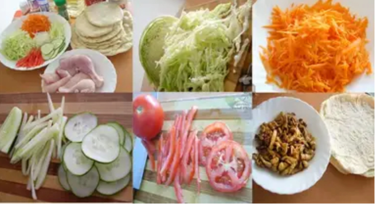
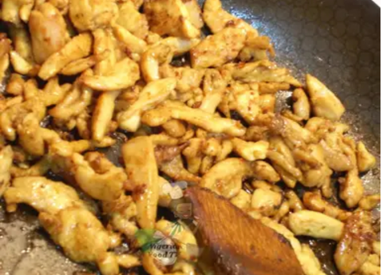
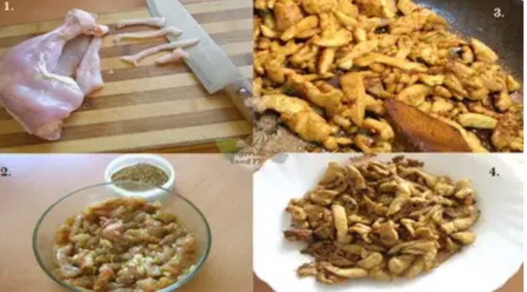
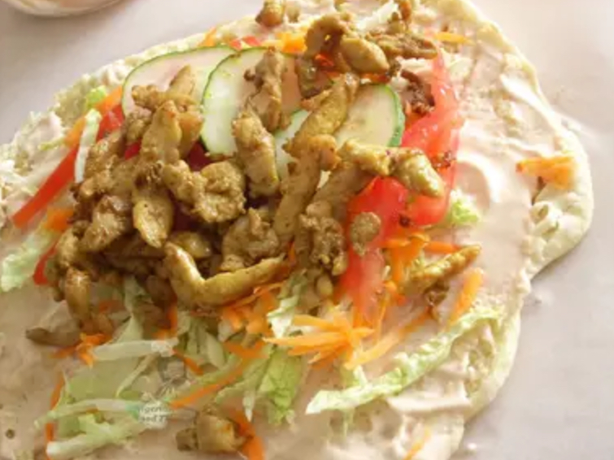
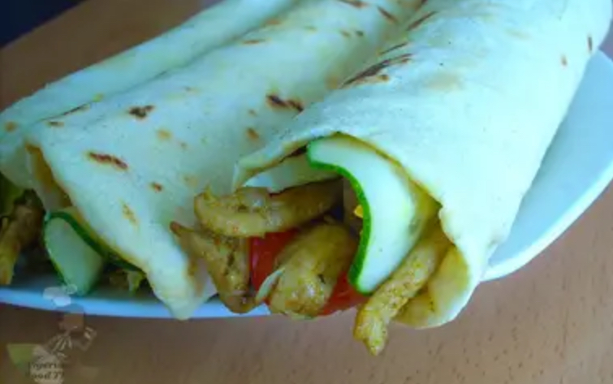
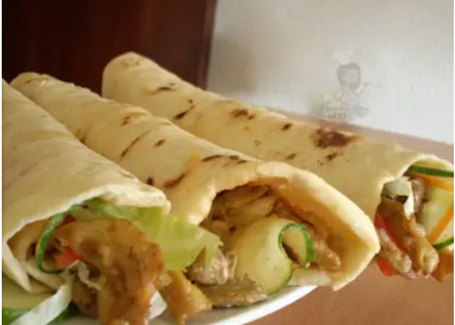

Nigerian Shawarma (Chicken and Beef Shawarma Recipe provided)

Nigerian Shawarma is the "Nigerian version" of the famous Shawarma (made with beef or chicken filling).
This tasty snack has become a popular meal on the streets of Nigeria and is also one of the most requested recipes i have recieved.
Years back, i used to get mine at the eatery and also wondered how i could remake this tasty snack at home, with basic spices readily available in most Nigerian kitchens; including the Shawarma bread.
After some trials and errors, i finally got the perfect mix. Now i present to you, the most deicious, tasty, mouthwatery, palate-tingling Nigerian shawarma you can ever get.
All said, this is my Nigerian Chicken Shawarma Recipe. Enjoy!!!
Ingredients for Nigerian Chicken Shawarma
This makes about 6+ large Shawarma wraps:
- 2 Chicken breasts(de-boned/boneless)
- 2 Chicken Thighs(a.k.a Chicken laps)(de-boned/boneless)(you can also uswe de-boned/boneless beef)
- 6+ Shawarma bread(either pita bread/flour tortilla wraps)
- 1 small sized cabbage(cut into thin strips)
- 3 medium sized carrots(grated or cut into thin strips)
- 1 large cucumber(cut into thin strips&circles)
- 2 big tomatoes(cut into thin strips)
- 1 medium sized Onions(cut into thin strips)
- Ketchup
- Mayonnaise
- 1 Tablespoon Vegetable/olive oil(for stir frying)
For the marinade:
- 1 teaspoon thyme
- 2 teaspoon curry(I used ducros brand)
- 1 teaspoon onion powder/2 teaspoon minced onions
- 1 teaspoon garlic powder/2 teaspoon minced garlic
- 1 large chicken stock cube/bouillon cube(crushed into powder)
- Half teaspoon of black pepper
- Chill pepper to taste
- Salt to taste(optional because the stock cube already contains salt)
- 1 Tablespoon Vegetable/Olive oil

Preparation:
- Wash and cut the vegetables into thin strip(if you haven't done that yet) and set aside. Also cut the chicken or beef into thin strips and set aside. Tip: I always recommend using a combinatin of chicken thighs&Breasts, because the fat from the thighs adds extra flavor and compliments the taste of the chicken breast.
- Place the chicken strips into a bowl, add the marinade and mix thoroughly until well incorpoted. Then cover and store in the fridge for 2 to 24 hours (depending on how much time you have). Tip: I actually don't wait 24 hours, i just store overnight or for 2-3 hours, but i realized that the longer the meat marinades, the better it tastes.
- In a pan, heat up a tablespoonful of oil. Add the marinated chicken/beef & stir fry until juicy and brown. Scoop unto a plate and set aside.


- Mix some mayonnaise and ketchup together("mayo-ketch" spread).
Place a shawarma bread on a clean flat surface and cut into two equal sizes(that's if you are using a large pita braed).
But if using a very flat bread or tortilla wraps, simply spread the "mayo-ketch" on it and then fill it with the sliced vegetables on one end and Sprinkle some chili pepper(optional);

Then fold the bread, tuck in the edge, and roll to form a shawarma wrap....yummmyyy!!!

Tip: if you want to warm it up a bit, place a heated pan for 3 minutes(the closed edge facing the pan). if you have a microwave or sandwish maker, feel free to use those too.
And your Homemade Nigerian Chicken Shawarma is ready...Enjoy!

Quick Note: There are several breads used for making shawarma; which includes, Pita bread, Naan bread, flour tortilla wraps and a lot more. Just make use of any one you have... it also tastes great in sliced bread(sandwich bread) and our local Agege bread..yes oo!